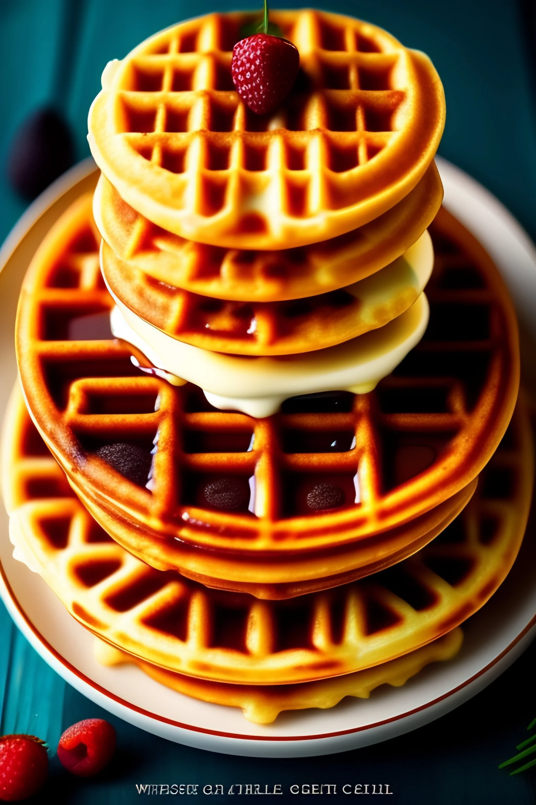

    <style>
    
        .footer {
            background-color: var(--Naraja-Palette);
            color: #fff;
            padding: 20px;
            display: flex;
            flex-wrap: wrap;
            justify-content: space-between;
        }
        .footer-column {
            flex: 1;
            min-width: 200px;
            margin-bottom: 20px;
        }
        .footer-column h3 {
            color: #fff;
            border-bottom: 1px solid black;
            padding-bottom: 10px;
        }
        .footer-column ul {
            list-style-type: none;
            padding: 0;
        }
        .footer-column ul li {
            margin-bottom: 5px;
        }
        .footer-column a {
            color: #fff;
            text-decoration: none;
        }
        .footer-column a:hover {
            text-decoration: underline;
        }
        .footer-bottom {
            width: 100%;
            text-align: center;
            margin-top: 20px;
            font-size: 0.8em;
            color: #888;
        }
        .logo {
            text-align: right;
            margin-top: 20px;
        }
        .logo img {
            max-width: 100px;
        }
        @media (max-width: 768px) {
            .footer-column {
                flex-basis: 100%;
            }
            .logo {
                text-align: center;
            }
        }
    </style>

    <footer class="footer">
        
        <div class="footer-column">
            <h3>More</h3>
            <ul>
                <li><a href="#">Events</a></li>
                <li><a href="#">Recipes</a></li>
                <li><a href="#">Jobs</a></li>
            </ul>
            
        </div>
        <div class="footer-column logo">
            
        </div>
        <div class="footer-bottom">
            <p>&copy;Valentín Coellar S. 2024 GrupoNucleon</p>
        </div>
    </footer>
